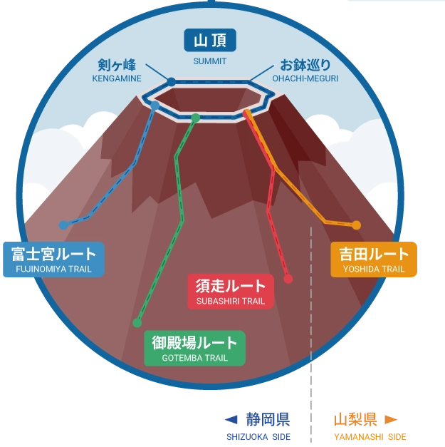
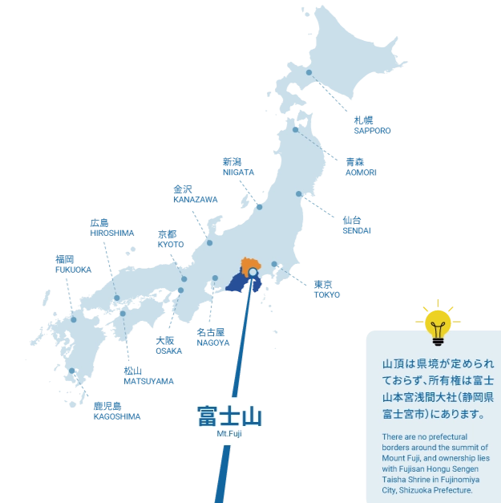
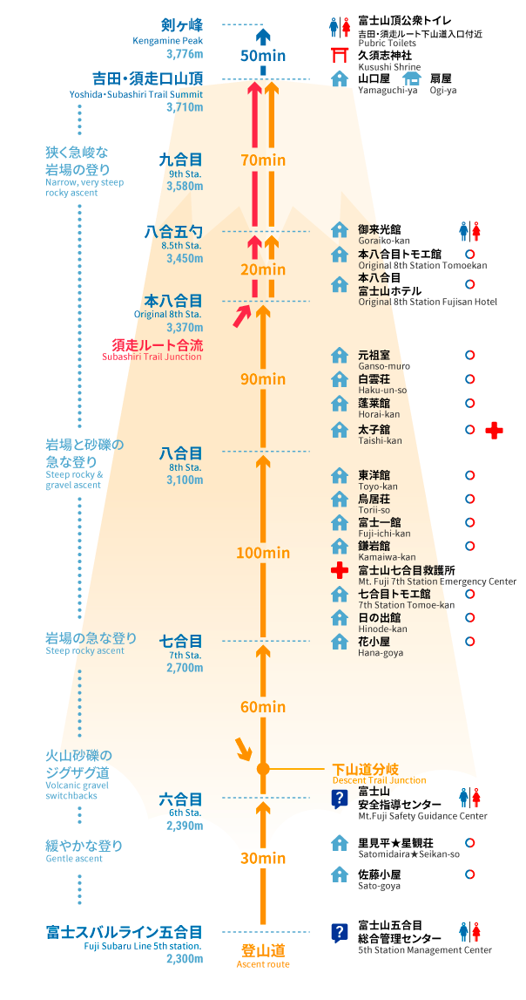

🔴 登山路線規劃
四大路線比較
富士山的主要登山道，4 條代表性路線：吉田（Yoshida）、富士宮（Fujinomiya）、須走（Subashiri）、御殿場（Gotemba）。這四條路線分別位在山梨縣與靜岡縣不同方位，海拔起點、路程長短、人潮、山屋與補給密度都不同，行程安排也會跟著改變。其中吉田和富士宮路線因山屋較多、路況較好，適合登山新手攀登的路線；須走和御殿場路線較長或路況較特殊，則是適合具有登山經驗的人。
| 路線 | 登山口海拔 | 上行距離 | 上行時間 | 人潮 | 適合對象 | 特色 |
|---|---|---|---|---|---|---|
| ⭐ 吉田 Yoshida・山梨 |
2,305m | 6.8 km | 約 6 小時 | 最多 | 新手首選 | 山屋最多、指標清楚、交通最成熟 |
| 富士宮 Fujinomiya・靜岡 |
2,400m | 4.3 km | 約 5 小時 | 多 | 想縮短距離者 | 距離最短；視野開闊；上升較直接 |
| 須走 Subashiri・靜岡 |
1,970m | 6.9 km | 約 7 小時 | 較少 | 喜歡地形多變者 | 前段森林感；下山砂走り有趣 |
| 御殿場 Gotemba・靜岡 |
1,440m | 10.5 km | 約 9 小時 | 最少 | 體能好、避人潮 | 路線最長最挑戰；需有登山經驗 |

🗺️ 四大路線位置示意

📍 富士山位置（山梨・靜岡縣境）
⭐ 吉田路線 — 為什麼選擇這條？
考量富士山攀登前會參加河口湖花火節（8/5），路線上選擇吉田路線，通常是最順路的安排。河口湖和富士吉田本來就在山梨側，去「富士スバルライン五合目」的巴士班次較多。

⬆️ 上山路線
- 五合目 → 六合目穿過森林的平緩上坡路
- 六合目 → 七合目火山沙礫鋪成的之字形小徑
- 七合目附近開始地形變得陡峭崎嶇
- 八合目中段開始與須走路線匯合，非常擁擠
- 九合目 → 山頂道路狹窄、多陡峭岩石路段，注意落石

⚠️ 2026 年攀登管制
務必出發前再次確認官方公告！ 自 2024 年起，吉田路線已實施攀登限制，2026 年與去年相比沒有重大變化，但具體細節請以官方最新公告為準。
🔗 富士登山オフィシャルサイト（官方網站）↗
開放時間
登山季 7月1日 至 9月10日（可能因天候或殘雪狀況延後開放）
通行費
每人每次 ¥4,000 日圓，建議事前線上預約登錄（送木質紀念牌）
每日人數上限
每日 4,000 人（山屋住宿者不在此限）；大門 14:00 至翌日 03:00 關閉
必要裝備檢查
防寒衣物、上下分離雨具、合適登山鞋等，裝備不合格不能上山